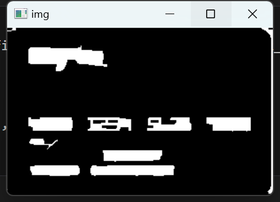
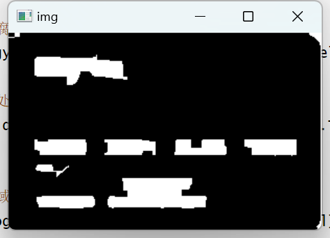

银行卡号识别
1 图像基本操作
在我的仓库中，有相关的代码操作。仓库：https://github.com/Guoxn1/ai。
我也是从bilibili学了一点，关于cv2的操作。链接：https://www.bilibili.com/video/BV1PV411774y/。
2 银行卡号识别简介
数据如上，其中有5个银行卡照片，和一个标准数字集图片。
最后做到的效果如下：
可运行的代码和数据集存在我的仓库中。
基本的实现思路是模板匹配，应当分以下几步进行实施：
1.读取模板图像，提取每个数字的轮廓，作为轮廓要resize大小，然后和每个数字进行对应。
2.读取银行卡图像，先找到大的轮廓，定位到卡号的位置，再进行轮廓检测得到每个数字，和模板数字特征匹配，得到最大的那个。
使用到的技术：
图像处理需要转换为灰度图像，并且需要开闭运算得到数字区域、sobel找轮廓，模板匹配等。
3 预定义数据和函数
全局变量，展示图片的函数等。
1 | |
4 处理模板图像
4.1 处理成二值图像
二值图像具有更好的边界识别。
1 | |
4.2 识别边界，建立图像和数字的对应关系
先定义两个函数，sort_contours和myresize，分别对应区域排序画框和调整图片大小。
1 | |
提取每一个模板数字，建立对应关系。
1 | |
5 处理银行卡图像
5.1 图像处理和图像增强
转换为二值图像是必要的，可以再考虑图像增强，比如顶帽操作，均衡操作。
1 | |
1 | |
1 | |
5.2 确定“四数字”轮廓
识别到银行卡号数字，由于数字间比较紧凑，所以尽量识别出整串数字或者按照四个数字为一小块，识别出来，然后再在这些小块中识别出每一个数字。要识别出银行卡“四数字”所在的位置，需要对其限制。
1 | |
对内部进行填充，提高识别率。


1 | |
1 | |

确定出“四数字”框：
1 | |
5.3 确定每个数字，并进行模板匹配

1 | |
如果这篇博客给到您帮助，我希望您能给我的仓库点一个star，这将是我继续创作下去的动力。
我的仓库地址，https://github.com/Guoxn1?tab=repositories。

银行卡号识别
http://example.com/2023/10/16/银行卡号识别/